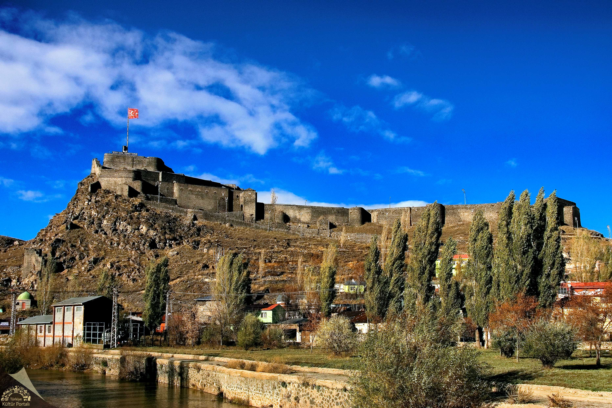
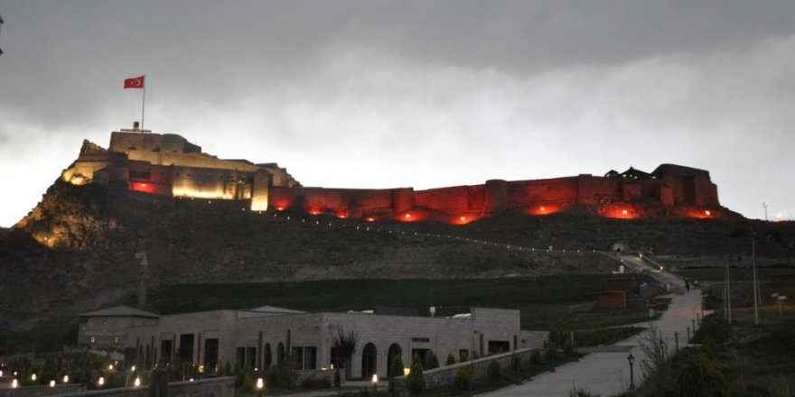

MİRASIMIZ
Kars için mirasımız denince akıllara çok yer gelir.Bunların başında şehrin en çok ziyaret edilen yerleri olan Kars Kalesi ve Ani harabeleri gelir.Size Kars Kalesini anlatıcam.
KARS KALESİ
Merkez Kale, İç Kale veya Stadel olarak anılır. M.S. 1153 yılında Selçuklulara bağlı Saltuklu Sultanı Melik İzzeddi'in emri ile Veziri Firuz Akay tarafından yaptırılmıştır. Kenti çevreleyen dış kale surları da 12. yy'da inşa edilmeye başlanmış 1386 tarihinde Timur tarafından yıkılan kale 1579 yılında Osmanlı Padişahı III.Murat'ın fermanı ile Kars'a gelen Lala Mustafa Paşa tarafından kale ve dış cephe surları yeniden yaptırılmıştır.(Kale kalıntılarında dört köşe mermer kitabe bulunmuş dış surların kapısına koydurulmuştur. Bu kitabeye göre "1152 yılında Sultan Melik İzzetin'in emri ile Veziri Firuz Akay tarafından yaptırılmıştır. Kaleyi 1386 yılında da Timur yerle bir etmiş, 1579 yılında tekrar III. Murat'ın emriyle Lala Mustafa Paşa yeniden yaptırmıştır.") 1616 ve 1636 yıllarında 2 defa onarımdan geçmiş, şehir merkezine bazı eserler eklenmiştir. Kaynaklara göre Merkez kale dışında surlar 27.000 metre uzunluğunda olup, 220 burçtan meydana gelmiştir. kale doğu-batı istikametinde 250 mt. Kuzey-güney istikametinde yaklaşık 90 mt'dir. 1877-1878 Osmanlı-Rus savaşından sonra 40 yıllık Rus işgalinde tahribatlara uğramış, orijinal özelliğini ve kullanımını yitirmiştir.
Kars Kalesinin dış cephe surları kesme bazalt taştan yapılmış olup yük istinat duvarları ile çevrilidir. Üç büyük kapısı bulunmaktadır. Bunlar;
1-Sukapısı veya Çeribaşı kapısı (batıda)
2-Kağızman kapısı (Ortakapı)
3-Behram Kapısı veya Bayrampaşa kapısıdır.
Kalenin kuzeydeki ana giriş kapısı kale önündeki boşluğa açılmaktadır. Bu yapılar arasında kalenin en yüksek noktası olan kale burcuna doğru taş döşemeli bir cadde mevcut olup caddenin bitiminden itibaren merdivenlerle kale burcuna ulaşılmaktadır. Kars Kalesi içerisinde 12. yy'dan kalma Celal Baba Türbesi, Askeri Koğuşlar, Tarlalar, Cephanelik ve bir adet Mescit yer almaktadır. Sit alanı olarak ilan edilen Kars Kalesi Kentten bakıldığında etkileyici bir görünüme sahiptir.